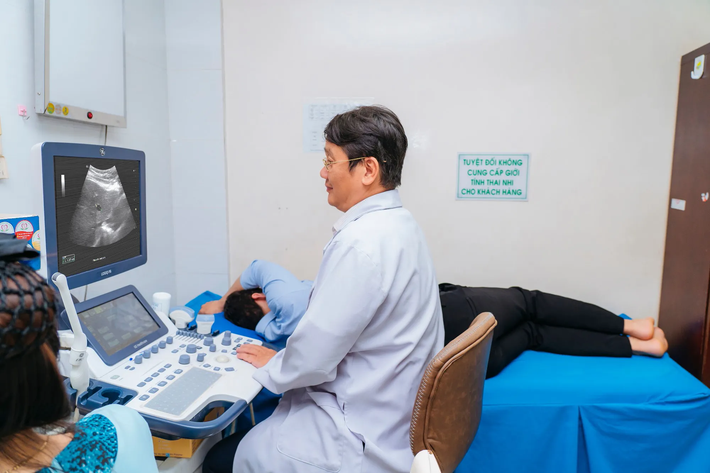

Siêu âm bụng tổng quát: Phát hiện sớm bệnh lý gan, mật, thận
Siêu âm bụng tổng quát là gì?
Siêu âm ổ bụng tổng quát là kỹ thuật chẩn đoán hình ảnh không xâm lấn, sử dụng sóng âm có tần số cao (trên 20.000Hz) để tạo ra hình ảnh các cơ quan nội tạng bên trong ổ bụng. Phương pháp này giúp bác sĩ quan sát cấu trúc và chức năng của các cơ quan quan trọng như gan, mật, tụy, lách, thận, bàng quang, tử cung và tuyến tiền liệt.
Nguyên lý hoạt động:
- Đầu dò siêu âm phát ra sóng âm tần số cao
- Sóng âm xuyên qua cơ thể và phản xạ lại khi gặp các cơ quan
- Máy tính xử lý tín hiệu phản xạ tạo thành hình ảnh trên màn hình
- Bác sĩ phân tích hình ảnh để đánh giá tình trạng các cơ quan
Tầm quan trọng của siêu âm bụng trong phát hiện sớm bệnh lý
Vai trò “mắt thứ ba” của bác sĩ
Siêu âm bụng tổng quát được ví như “con mắt thứ ba” giúp bác sĩ nhìn sâu vào bên trong cơ thể, phát hiện những bất thường mà khám lâm sàng không thể phát hiện được. Đây là công cụ không thể thiếu trong:
- Chẩn đoán bệnh lý ở giai đoạn sớm
- Tầm soát các bệnh lý tiềm ẩn
- Theo dõi tiến triển bệnh
- Đánh giá hiệu quả điều trị
Ưu điểm vượt trội
1. An toàn tuyệt đối
- Không sử dụng tia bức xạ có hại
- Không gây đau đớn cho bệnh nhân
- Có thể thực hiện nhiều lần không giới hạn
- An toàn cho mọi đối tượng, kể cả trẻ em và phụ nữ mang thai
2. Nhanh chóng và tiện lợi
- Thời gian thực hiện: 15-30 phút
- Kết quả có ngay sau khi làm
- Không cần chuẩn bị phức tạp
- Có thể thực hiện tại giường bệnh
Xem thêm: Phát hiện sớm các bệnh lý nguy hiểm với kỹ thuật siêu âm Doppler tim
Các bệnh lý gan được phát hiện qua siêu âm
1. Gan nhiễm mỡ
Dấu hiệu siêu âm:
- Nhu mô gan có độ âm tăng (sáng hơn bình thường)
- Giảm độ tương phản giữa gan và thận
- Mờ các mạch máu trong gan
Ý nghĩa lâm sàng:
- Giai đoạn đầu có thể hồi phục hoàn toàn
- Nếu không điều trị có thể tiến triển thành xơ gan
- Liên quan đến béo phì, đái tháo đường, rối loạn lipid máu
2. Viêm gan mạn tính
Biểu hiện siêu âm:
- Kích thước gan thay đổi (to hoặc nhỏ)
- Bề mặt gan không đều
- Độ âm nhu mô tăng không đồng nhất
- Lách có thể to
3. Xơ gan
Dấu hiệu đặc trưng:
- Gan nhỏ lại, bề mặt nhấp nhô
- Nhu mô gan có độ âm tăng mạnh
- Lách to rõ rệt
- Có thể có dịch ổ bụng
4. Các khối u gan
U lành tính:
- Nang gan: vùng không âm, thành mỏng
- Máu tụ gan: ranh giới rõ, độ âm hỗn hợp
- FNH, Adenoma: khối có ranh giới rõ
U ác tính:
- Ung thư gan nguyên phát: khối không đồng nhất
- Ung thư di căn: nhiều ổ nhỏ rải rác
Bệnh lý đường mật thường gặp
1. Sỏi túi mật
Hình ảnh siêu âm đặc trưng:
- Các đốm sáng trong lòng túi mật
- Có bóng đổ phía sau sỏi
- Sỏi di chuyển khi bệnh nhân thay đổi tư thế
Phân loại:
- Sỏi nhỏ (dưới 5mm): nguy cơ rơi vào ống mật
- Sỏi lớn (trên 2cm): nguy cơ ung thư túi mật tăng
2. Viêm túi mật
Dấu hiệu siêu âm:
- Thành túi mật dày lên (trên 3mm)
- Dịch quanh túi mật
- Murphy sign dương tính khi ấn đầu dò
3. Polyp túi mật
- Khối nhỏ bám thành túi mật
- Không có bóng đổ phía sau
- Không di chuyển khi thay đổi tư thế
- Cần theo dõi nếu kích thước trên 10mm
4. Tắc mật
Nguyên nhân thường gặp:
- Sỏi ống mật chủ
- U đầu tụy
- U đường mật
- Chèn ép từ bên ngoài
Dấu hiệu:
- Ống mật trong và ngoài gan giãn
- Túi mật căng phồng (nếu tắc dưới ống mật nang)
Bệnh lý thận được siêu âm phát hiện
1. Sỏi thận
Đặc điểm siêu âm:
- Các đốm sáng mạnh trong thận
- Có bóng đổ âm thanh phía sau
- Vị trí hay gặp: đài thận, bể thận, niệu quản
Phân loại theo kích thước:
- Sỏi nhỏ (dưới 5mm): có thể tự rơi
- Sỏi vừa (5-10mm): cần theo dõi
- Sỏi lớn (trên 10mm): cần can thiệp
2. Ứ nước thận
Nguyên nhân:
- Tắc nghẽn niệu quản do sỏi
- Chèn ép từ khối u
- Dị dạng bẩm sinh
Hình ảnh siêu âm:
- Hệ đài bể thận giãn
- Nhu mô thận mỏng đi
- Có thể xác định mức độ tắc nghẽn
3. Nang thận
Nang đơn giản:
- Vùng không âm, thành mỏng
- Không có vách ngăn bên trong
- Lành tính, không cần điều trị
Nang phức tạp:
- Có vách ngăn, thành dày
- Nội dung không đồng nhất
- Cần theo dõi, có thể sinh thiết
4. Khối u thận
U lành tính:
- Ranh giới rõ ràng
- Độ âm đồng nhất
- Không xâm lấn mô xung quanh
U ác tính:
- Ranh giới không rõ
- Độ âm không đồng nhất
- Có thể có hoại tử, xuất huyết
Các bệnh lý khác được siêu âm phát hiện
Bệnh lý tuyến tụy
- Viêm tụy cấp: tụy to, giảm âm
- Viêm tụy mạn: tụy có thể nhỏ, tăng âm
- U tụy: khối bất thường trong nhu mô tụy
Bệnh lý lách
- Lách to: tăng kích thước, có thể do nhiều nguyên nhân
- Máu tụ lách: sau chấn thương
- Nhồi máu lách: vùng giảm âm hình nêm
Bệnh lý sinh dục
Ở nữ:
- U xơ tử cung
- U nang buồng trứng
- Thai ngoài tử cung
Ở nam:
- Phì đại tiền liệt tuyến
- U tuyến tiền liệt
Quy trình thực hiện siêu âm bụng tổng quát

Chuẩn bị trước khi siêu âm
Về ăn uống:
- Nhịn ăn 4-6 giờ trước khi siêu âm (để khám túi mật tốt hơn)
- Có thể uống ít nước trong trường hợp cần thiết
- Không nên uống nước có gas, sữa
Về trang phục:
- Mặc quần áo thoải mái, dễ tháo
- Tránh mặc nhiều lớp quần áo
- Tháo bỏ trang sức vùng bụng
Tâm lý:
- Thư giãn, không căng thẳng
- Hợp tác với bác sĩ trong quá trình thăm khám
Trong quá trình siêu âm
Bước 1: Chuẩn bị
- Bệnh nhân nằm ngửa trên giường khám
- Bác sĩ bôi gel siêu âm lên vùng bụng
- Giải thích quy trình cho bệnh nhân
Bước 2: Thực hiện
- Bác sĩ di chuyển đầu dò trên vùng bụng
- Quan sát từng cơ quan một cách có hệ thống
- Đo kích thước, ghi nhận các bất thường
Bước 3: Hoàn thành
- Lau sạch gel siêu âm
- Giải thích sơ bộ kết quả cho bệnh nhân
- Hẹn tái khám nếu cần thiết
Sau khi siêu âm
- Bệnh nhân có thể ăn uống bình thường ngay
- Không có tác dụng phụ nào
- Nhận kết quả và tư vấn của bác sĩ
Giải đoán kết quả siêu âm
Thuật ngữ thường gặp
Về độ âm:
- Tăng âm (hyperechoic): sáng hơn bình thường
- Giảm âm (hypoechoic): tối hơn bình thường
- Không âm (anechoic): hoàn toàn tối, thường là dịch
Về kích thước:
- Gan bình thường: không quá bờ sườn phải
- Thận phải: 9-12cm, thận trái: 9.5-12.5cm
- Túi mật: dài 7-10cm, rộng 3-4cm
Về cấu trúc:
- Đồng nhất: cấu trúc đều
- Không đồng nhất: cấu trúc không đều
- Ranh giới rõ/không rõ
Hạn chế của siêu âm bụng
Những trường hợp khó thực hiện
- Bệnh nhân béo phì: sóng siêu âm khó xuyên qua
- Có nhiều khí trong ruột: cản trở hình ảnh
- Bệnh nhân không hợp tác
- Vết thương hở vùng bụng
Cần kết hợp với các phương pháp khác
- CT scan: đánh giá chi tiết hơn
- MRI: phân biệt tốt các loại mô mềm
- Xét nghiệm máu: đánh giá chức năng cơ quan
- Nội soi: khám trực tiếp lòng cơ quan rỗng
Tần suất thực hiện siêu âm bụng
Khám sức khỏe định kỳ
Người trưởng thành khỏe mạnh:
- Dưới 40 tuổi: 2 năm/lần
- Từ 40-60 tuổi: 1 năm/lần
- Trên 60 tuổi: 6 tháng/lần
Nhóm nguy cơ cao:
- Có tiền sử bệnh lý gan: 3-6 tháng/lần
- Sỏi mật: 6-12 tháng/lần
- Bệnh thận mạn: theo chỉ định bác sĩ
Xem thêm: Tại sao nên siêu âm bụng tổng quát định kỳ?
Khi có triệu chứng
Cần siêu âm ngay:
- Đau bụng dữ dội, đột ngột
- Vàng da, vàng mắt
- Nước tiểu sẫm màu, đau lưng
- Sốt kèm đau hạ sườn
Lựa chọn địa chỉ siêu âm bụng uy tín
Tiêu chí đánh giá chất lượng
1. Trang thiết bị:
- Máy siêu âm hiện đại, độ phân giải cao
- Các đầu dò chuyên dụng đầy đủ
- Hệ thống lưu trữ hình ảnh số
2. Đội ngũ bác sĩ:
- Bác sĩ chuyên khoa chẩn đoán hình ảnh
- Kinh nghiệm lâu năm trong lĩnh vực siêu âm
- Được đào tạo bài bản, cập nhật kiến thức thường xuyên
3. Quy trình chuyên nghiệp:
- Thời gian khám đầy đủ, không vội vàng
- Giải thích kỹ lưỡng cho bệnh nhân
- Tư vấn hướng xử trí phù hợp
Cam kết chất lượng dịch vụ
- Thời gian chờ đợi tối thiểu
- Kết quả chính xác, đáng tin cậy
- Tư vấn tận tình, chu đáo
- Hỗ trợ 24/7 khi cần thiết
Kết luận
Siêu âm bụng tổng quát là công cụ chẩn đoán không thể thiếu trong việc phát hiện sớm các bệnh lý quan trọng như gan, mật, thận. Với những ưu điểm vượt trội về độ an toàn, tính tiện lợi và khả năng chẩn đoán chính xác, phương pháp này đã trở thành lựa chọn hàng đầu trong tầm soát sức khỏe định kỳ.
Thông điệp quan trọng:
- Thực hiện siêu âm bụng định kỳ giúp phát hiện sớm bệnh lý
- Điều trị kịp thời ở giai đoạn sớm có hiệu quả cao
- Lựa chọn địa chỉ uy tín để đảm bảo chất lượng chẩn đoán
- Kết hợp với lối sống lành mạnh để bảo vệ sức khỏe tối ưu
Việc đầu tư cho sức khỏe thông qua các phương pháp tầm soát hiện đại như siêu âm bụng tổng quát không chỉ giúp phát hiện sớm bệnh lý mà còn tiết kiệm chi phí điều trị dài hạn. Bác sĩ chuyên khoa tại phòng khám luôn sẵn sàng tư vấn và thực hiện siêu âm bụng chính xác, an toàn cho mọi bệnh nhân.
Hãy chủ động bảo vệ sức khỏe của bản thân và gia đình bằng cách thực hiện siêu âm bụng tổng quát định kỳ. Đây là khoản đầu tư đáng giá nhất cho sức khỏe và hạnh phúc của mỗi người.
Thông tin trong bài viết chỉ mang tính chất tham khảo. Để được chẩn đoán và tư vấn chính xác, vui lòng liên hệ trực tiếp với Phòng khám Đa khoa Đại Phước.

Các tin khác


ĐĂNG KÝ NHẬN BẢN TIN

Phòng Khám Đa Khoa Đại Phước
- 829 đường 3 tháng 2, Phường Minh Phụng, Thành phố Hồ Chí Minh
- 1900 599 941 - 0938 829 831
- (028) 3955 7999
- info@ytedaiphuoc.vn
-

6:00 - 11:30 (Chủ Nhật)


GPKD số : 0312023683 cấp ngày: 29/10/2012 Bởi Sở Kế Hoạch và Đầu Tư TP.Hồ Chí Minh
Đại diện: Tống Nguyễn Diễm Hồng